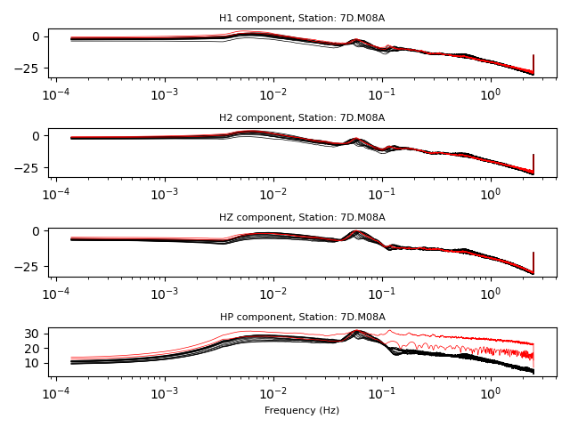

ATaCR¶
Introduction¶
atacr is a module for the correction of vertical component data from OBS
stations from tilt and compliance noise. This module is a translation of the
Matlab code ATaCR and the acronym
stands for Automatic Tilt and Compliance Removal. For more details on the
theory and methodology, we refer the interested reader to the following papers:
Bell, S. W., D. W. Forsyth, and Y. Ruan (2014), Removing noise from the vertical component records of ocean-bottom seismometers: Results from year one of the Cascadia Initiative, Bull. Seismol. Soc. Am., 105, 300-313, https://doi.org/10.1785/0120140054
Crawford, W.C., Webb, S.C., (2000). Identifying and removing tilt noise from low-frequency (0.1 Hz) seafloor vertical seismic data, Bull. seism. Soc. Am., 90, 952-963, https://doi.org/10.1785/0119990121
Janiszewski, H A, J B Gaherty, G A Abers, H Gao, Z C Eilon, Amphibious surface-wave phase-velocity measurements of the Cascadia subduction zone, Geophysical Journal International, Volume 217, Issue 3, June 2019, Pages 1929-1948, https://doi.org/10.1093/gji/ggz051
The analysis can be carried out for either one (or both) compliance or tilt corrections. In all cases the analysis requires at least vertical component data. Additional data required depend on the type of analysis. The software will automatically calculate all possible corrections depending on the available channels.
Noise Corrections¶
Compliance
Compliance is defined as the spectral ratio between pressure and vertical
displacement data. Compliance noise arises from seafloor deformation due
to seafloor and water wave effects (including infragravity waves).
This is likely the main source of noise in vertical component OBS data.
This analysis therefore requires both vertical (?HZ) and pressure (?XH) data.
Tilt
Tilt noise arises from OBS stations that are not perfectly leveled, and
therefore the horizontal seafloor deformation leaks onto the vertical
component. This effect can be removed by calculating the spectral
ratio between horizontal and vertical displacement data. In most cases,
however, the tilt direction (measured on a compass - as opposed to tilt
angle, measured from the vertical axis) is unknown and must be determined
from the coherence between rotated horizontal components and the vertical
component. This analysis therefore requires vertical (?HZ) and the two
horizontal (?H1,2) component data.
Compliance + Tilt
It is of course possible to combine both corrections and apply them
sequentially. In this case the tilt noise is removed first, followed by compliance.
This analysis requires all four components: three-component
seismic (?HZ,1,2) and pressure (?XH) data.
API documentation¶
Base Classes¶
atacr defines the following base classes:
The class DayNoise contains attributes
and methods for the analysis of two- to four-component day-long time-series
(3-component seismograms and pressure data). Objects created with this class
are required in any subsequent analysis. The available methods calculate the
power-spectral density (PSD) functions of sub-windows (default is 2-hour windows)
and identifies windows with anomalous PSD properties. These windows are flagged
and are excluded from the final averages of all possible PSD and cross-spectral density
functions between all available components.
The class StaNoise contains attributes
and methods for the aggregation of averaged daily spectra into a station
average. An object created with this class requires that at least two
DayNoise objects are available in memory. Methods available for this class are
similar to those defined in the DayNoise class, but are applied to daily
spectral averages, as opposed to sub-daily averages. The result is a spectral
average that represents all available data for the specific station.
The class TFNoise contains attributes
and methods for the calculation of transfer functions from noise
traces used to correct the vertical component. A TFNoise object works with
either one of DayNoise and StaNoise objects to calculate all possible
transfer functions across all available components. These transfer functions
are saved as attributes of the object in a Dictionary.
The class EventStream contains attributes
and methods for the application of the transfer functions to the
event traces for the correction (cleaning) of vertical component
seismograms. An EventStream object is initialized with raw (or pre-processed)
seismic and/or pressure data and needs to be processed using the same (sub) window
properties as the DayNoise objects. This ensures that the component corrections
are safely applied to produce corrected (cleaned) vertical components.
atacr further defines the following container classes:
These classes are used as containers for individual traces/objects that are used as attributes of the base classes.
Note
In the examples below, the SAC data were obtained and pre-processed
using the accompanying scripts atacr_download_data.py and
atacr_download_event.py. See the script and tutorial for details.
DayNoise¶
-
class
obstools.atacr.classes.DayNoise(tr1=None, tr2=None, trZ=None, trP=None, window=7200.0, overlap=0.3, key='')¶ A DayNoise object contains attributes that associate three-component raw (or deconvolved) traces, metadata information and window parameters. The available methods carry out the quality control steps and the average daily spectra for windows flagged as “good”.
Notes
The object is initialized with
Traceobjects for H1, H2, HZ and P components. Traces can be empty if data are not available. Upon saving, those traces are discarded to save disk space.-
window¶ Length of time window in seconds
- Type
float
-
overlap¶ Fraction of overlap between adjacent windows
- Type
float
-
key¶ Station key for current object
- Type
str
-
dt¶ Sampling distance in seconds. Obtained from
trZobject- Type
float
-
npts¶ Number of points in time series. Obtained from
trZobject- Type
int
-
fs¶ Sampling frequency (in Hz). Obtained from
trZobject- Type
float
-
year¶ Year for current object (obtained from UTCDateTime). Obtained from
trZobject- Type
str
-
julday¶ Julian day for current object (obtained from UTCDateTime). Obtained from
trZobject- Type
str
-
ncomp¶ Number of available components (either 2, 3 or 4). Obtained from non-empty
Traceobjects- Type
int
-
tf_list¶ Dictionary of possible transfer functions given the available components.
- Type
Dict
-
goodwins¶ List of booleans representing whether a window is good (True) or not (False). This attribute is returned from the method
QC_daily_spectra()- Type
list
-
rotation¶ Container for daily rotated (cross) spectral power for all available components
- Type
-
f¶ Frequency axis for corresponding time sampling parameters. Determined from method
average_daily_spectra()- Type
ndarray
Examples
Get demo noise data as DayNoise object
>>> from obstools.atacr import DayNoise >>> daynoise = DayNoise('demo') Uploading demo data - March 04, 2012, station 7D.M08A
Now check its main attributes
>>> print(*[daynoise.tr1, daynoise.tr2, daynoise.trZ, daynoise.trP], sep="\n") 7D.M08A..1 | 2012-03-04T00:00:00.005500Z - 2012-03-04T23:59:59.805500Z | 5.0 Hz, 432000 samples 7D.M08A..2 | 2012-03-04T00:00:00.005500Z - 2012-03-04T23:59:59.805500Z | 5.0 Hz, 432000 samples 7D.M08A..P | 2012-03-04T00:00:00.005500Z - 2012-03-04T23:59:59.805500Z | 5.0 Hz, 432000 samples 7D.M08A..Z | 2012-03-04T00:00:00.005500Z - 2012-03-04T23:59:59.805500Z | 5.0 Hz, 432000 samples >>> daynoise.window 7200.0 >>> daynoise.overlap 0.3 >>> daynoise.key '7D.M08A' >>> daynoise.ncomp 4 >>> daynoise.tf_list {'ZP': True, 'Z1': True, 'Z2-1': True, 'ZP-21': True, 'ZH': True, 'ZP-H': True}
-
QC_daily_spectra(pd=[0.004, 0.2], tol=1.5, alpha=0.05, smooth=True, fig_QC=False, debug=False)¶ Method to determine daily time windows for which the spectra are anomalous and should be discarded in the calculation of the transfer functions.
- Parameters
pd (list) – Frequency corners of passband for calculating the spectra
tol (float) – Tolerance threshold. If spectrum > std*tol, window is flagged as bad
alpha (float) – Confidence interval for f-test
smooth (boolean) – Determines if the smoothed (True) or raw (False) spectra are used
fig_QC (boolean) – Whether or not to produce a figure showing the results of the quality control
debug (boolean) – Whether or not to plot intermediate steps in the QC procedure for debugging
-
goodwins List of booleans representing whether a window is good (True) or not (False)
- Type
list
Examples
Perform QC on DayNoise object using default values and plot final figure
>>> from obstools.atacr import DayNoise >>> daynoise = DayNoise('demo') Uploading demo data - March 04, 2012, station 7D.M08A >>> daynoise.QC_daily_spectra(fig_QC=True)
Print out new attribute of DayNoise object
>>> daynoise.goodwins array([False, True, True, True, True, True, True, True, False, False, True, True, True, True, True, True], dtype=bool)
-
average_daily_spectra(calc_rotation=True, fig_average=False, fig_coh_ph=False, debug=False)¶ Method to average the daily spectra for good windows. By default, the method will attempt to calculate the azimuth of maximum coherence between horizontal components and the vertical component (for maximum tilt direction), and use the rotated horizontals in the transfer function calculations.
- Parameters
calc_rotation (boolean) – Whether or not to calculate the tilt direction
fig_average (boolean) – Whether or not to produce a figure showing the average daily spectra
fig_coh_ph (boolean) – Whether or not to produce a figure showing the maximum coherence between H and Z
debug (boolean) – Whether or not to plot intermediate steps in the QC procedure for debugging
-
f Positive frequency axis for corresponding window parameters
- Type
ndarray
-
power Container for the Power spectra
- Type
-
cross Container for the Cross power spectra
- Type
-
rotation Container for the Rotated power and cross spectra
- Type
Cross, optional
Examples
Average spectra for good windows using default values and plot final figure
>>> from obstools.atacr import DayNoise >>> daynoise = DayNoise('demo') Uploading demo data - March 04, 2012, station 7D.M08A >>> daynoise.QC_daily_spectra() >>> daynoise.average_daily_spectra(fig_average=True)
Print out available attributes of DayNoise object
>>> daynoise.__dict__.keys() dict_keys(['tr1', 'tr2', 'trZ', 'trP', 'window', 'overlap', 'key', 'dt', 'npts', 'fs', 'year', 'julday', 'ncomp', 'tf_list', 'QC', 'av', 'goodwins', 'f', 'power', 'cross', 'rotation'])
-
save(filename)¶ Method to save the object to file using ~Pickle.
- Parameters
filename (str) – File name
Examples
Run demo through all methods
>>> from obstools.atacr import DayNoise >>> daynoise = DayNoise('demo') Uploading demo data - March 04, 2012, station 7D.M08A >>> daynoise.QC_daily_spectra() >>> daynoise.average_daily_spectra()
Save object
>>> daynoise.save('daynoise_demo.pkl')
Check that it has been saved
>>> import glob >>> glob.glob("./daynoise_demo.pkl") ['./daynoise_demo.pkl']
-
StaNoise¶
-
class
obstools.atacr.classes.StaNoise(daylist=None)¶ A StaNoise object contains attributes that associate three-component raw (or deconvolved) traces, metadata information and window parameters.
Notes
The object is initially a container for
DayNoiseobjects. Once the StaNoise object is initialized (using the method init() or by calling the QC_sta_spectra method), each individual spectral quantity is unpacked as an object attribute and the original DayNoise objects are removed from memory. In addition, all spectral quantities associated with the original DayNoise objects (now stored as attributes) are discarded as the object is saved to disk and new container objects are defined and saved.-
initialized¶ Whether or not the object has been initialized - False unless one of the methods have been called. When True, the daylist attribute is deleted from memory
- Type
bool
Examples
Initialize empty object
>>> from obstools.atacr import StaNoise >>> stanoise = StaNoise()
Initialize with DayNoise object
>>> from obstools.atacr import DayNoise >>> daynoise = DayNoise('demo') Uploading demo data - March 04, 2012, station 7D.M08A >>> stanoise = StaNoise(daylist=[daynoise])
Add or append DayNoise object to StaNoise
>>> stanoise = StaNoise() >>> stanoise += daynoise
>>> stanoise = StaNoise() >>> stanoise.append(daynoise)
Import demo noise data with 4 DayNoise objects
>>> from obstools.atacr import StaNoise >>> stanoise = StaNoise('demo') Uploading demo data - March 01 to 04, 2012, station 7D.M08A >>> stanoise.daylist [<obstools.atacr.classes.DayNoise at 0x11e3ce8d0>, <obstools.atacr.classes.DayNoise at 0x121c7ae10>, <obstools.atacr.classes.DayNoise at 0x121ca5940>, <obstools.atacr.classes.DayNoise at 0x121e7dd30>] >>> sta.initialized False
-
init()¶ Method to initialize the StaNoise object. This method is used to unpack the spectral quantities from the original
DayNoiseobjects and allow the methods to proceed. The originalDayNoiseobjects are deleted from memory during this process.Notes
If the original
DayNoiseobjects have not been processed using their QC and averaging methods, these will be called first before unpacking into the object attributes.-
f¶ Frequency axis for corresponding time sampling parameters
- Type
ndarray
-
key¶ Station key for current object
- Type
str
-
ncomp¶ Number of available components (either 2, 3 or 4)
- Type
int
-
tf_list¶ Dictionary of possible transfer functions given the available components.
- Type
Dict
-
c11¶ Power spectra for component H1. Other identical attributes are available for the power, cross and rotated spectra: [11, 12, 1Z, 1P, 22, 2Z, 2P, ZZ, ZP, PP, HH, HZ, HP]
- Type
numpy.ndarray
-
direc¶ Array of azimuths used in determining the tilt direction
- Type
numpy.ndarray
-
tilt¶ Tilt direction from maximum coherence between rotated H1 and HZ components
- Type
float
-
QC¶ Whether or not the method
QC_sta_spectra()has been called.- Type
bool
-
av¶ Whether or not the method
average_sta_spectra()has been called.- Type
bool
Examples
Initialize demo data
>>> from obstools.atacr import StaNoise >>> stanoise = StaNoise('demo') Uploading demo data - March 01 to 04, 2012, station 7D.M08A >>> stanoise.init()
Check that daylist attribute has been deleted
>>> stanoise.daylist --------------------------------------------------------------------------- AttributeError Traceback (most recent call last) <ipython-input-4-a292a91450a9> in <module> ----> 1 stanoise.daylist AttributeError: 'StaNoise' object has no attribute 'daylist' >>> stanoise.__dict__.keys() dict_keys(['initialized', 'c11', 'c22', 'cZZ', 'cPP', 'c12', 'c1Z', 'c1P', 'c2Z', 'c2P', 'cZP', 'cHH', 'cHZ', 'cHP', 'direc', 'tilt', 'f', 'nwins', 'ncomp', 'key', 'tf_list', 'QC', 'av'])
-
-
QC_sta_spectra(pd=[0.004, 0.2], tol=2.0, alpha=0.05, fig_QC=False, debug=False)¶ Method to determine the days (for given time window) for which the spectra are anomalous and should be discarded in the calculation of the long-term transfer functions.
- Parameters
pd (list) – Frequency corners of passband for calculating the spectra
tol (float) – Tolerance threshold. If spectrum > std*tol, window is flagged as bad
alpha (float) – Confidence interval for f-test
fig_QC (boolean) – Whether or not to produce a figure showing the results of the quality control
debug (boolean) – Whether or not to plot intermediate steps in the QC procedure for debugging
-
gooddays¶ List of booleans representing whether a day is good (True) or not (False)
- Type
list
Examples
Import demo data, call method and generate final figure
>>> obstools.atacr import StaNoise >>> stanoise = StaNoise('demo') Uploading demo data - March 01 to 04, 2012, station 7D.M08A >>> stanoise.QC_sta_spectra(fig_QC=True) >>> stanoise.QC True
-
average_sta_spectra(fig_average=False, debug=False)¶ Method to average the daily station spectra for good windows.
- Parameters
fig_average (boolean) – Whether or not to produce a figure showing the average daily spectra
debug (boolean) – Whether or not to plot intermediate steps in the QC procedure for debugging
Examples
Average daily spectra for good days using default values and produce final figure
>>> obstools.atacr import StaNoise >>> stanoise = StaNoise('demo') Uploading demo data - March 01 to 04, 2012, station 7D.M08A >>> stanoise.QC_sta_spectra() >>> stanoise.average_sta_spectra()
-
save(filename)¶ Method to save the object to file using ~Pickle.
- Parameters
filename (str) – File name
Examples
Run demo through all methods
>>> from obstools.atacr import StaNoise >>> stanoise = StaNoise('demo') Uploading demo data - March 01 to 04, 2012, station 7D.M08A >>> stanoise.QC_sta_spectra() >>> stanoise.average_sta_spectra()
Save object
>>> stanoise.save('stanoise_demo.pkl')
Check that it has been saved
>>> import glob >>> glob.glob("./stanoise_demo.pkl") ['./stanoise_demo.pkl']
-
TFNoise¶
-
class
obstools.atacr.classes.TFNoise(objnoise=None)¶ A TFNoise object contains attributes that store the transfer function information from multiple components (and component combinations).
Notes
The object is initialized with either a processed
DayNoiseorStaNoiseobject. Each individual spectral quantity is unpacked as an object attribute, but all of them are discarded as the object is saved to disk and new container objects are defined and saved.-
f¶ Frequency axis for corresponding time sampling parameters
- Type
ndarray
-
c11¶ Power spectra for component H1. Other identical attributes are available for the power, cross and rotated spectra: [11, 12, 1Z, 1P, 22, 2Z, 2P, ZZ, ZP, PP, HH, HZ, HP]
- Type
numpy.ndarray
-
tilt¶ Tile direction from maximum coherence between rotated H1 and HZ components
- Type
float
-
tf_list¶ Dictionary of possible transfer functions given the available components.
- Type
Dict
Examples
Initialize a TFNoise object with a DayNoise object. The DayNoise object must be processed for QC and averaging, otherwise the TFNoise object will not initialize.
>>> from obstools.atacr import DayNoise, TFNoise >>> daynoise = DayNoise('demo') Uploading demo data - March 04, 2012, station 7D.M08A >>> tfnoise = TFNoise(daynoise) Traceback (most recent call last): File "<stdin>", line 1, in <module> File "/Users/pascalaudet/Softwares/Python/Projects/dev/OBStools/obstools/atacr/classes.py", line 1215, in __init__ Exception: Error: Noise object has not been processed (QC and averaging) - aborting
Now re-initialized with a processed DayNoise object
>>> from obstools.atacr import DayNoise, TFNoise >>> daynoise = DayNoise('demo') Uploading demo data - March 04, 2012, station 7D.M08A >>> daynoise.QC_daily_spectra() >>> daynoise.average_daily_spectra() >>> tfnoise = TFNoise(daynoise)
Initialize a TFNoise object with a processed StaNoise object
>>> from obstools.atacr import StaNoise, TFNoise >>> stanoise = StaNoise('demo') Uploading demo data - March 01 to 04, 2012, station 7D.M08A >>> stanoise.QC_sta_spectra() >>> stanoise.average_sta_spectra() >>> tfnoise = TFNoise(stanoise)
-
class
TfDict¶
-
transfer_func()¶ Method to calculate transfer functions between multiple components (and component combinations) from the averaged (daily or station-averaged) noise spectra.
Examples
Calculate transfer functions for a DayNoise object
>>> from obstools.atacr import DayNoise, TFNoise >>> daynoise = DayNoise('demo') Uploading demo data - March 04, 2012, station 7D.M08A >>> daynoise.QC_daily_spectra() >>> daynoise.average_daily_spectra() >>> tfnoise = TFNoise(daynoise) >>> tfnoise.transfer_func() >>> tfnoise.transfunc.keys() dict_keys(['ZP', 'Z1', 'Z2-1', 'ZP-21', 'ZH', 'ZP-H'])
Calculate transfer functions for a StaNoise object
>>> from obstools.atacr import StaNoise, TFNoise >>> stanoise = StaNoise('demo') Uploading demo data - March 01 to 04, 2012, station 7D.M08A >>> stanoise.QC_sta_spectra() >>> stanoise.average_sta_spectra() >>> tfnoise = TFNoise(daynoise) >>> tfnoise.transfer_func() >>> tfnoise.transfunc.keys() dict_keys(['ZP', 'Z1', 'Z2-1', 'ZP-21'])
-
save(filename)¶ Method to save the object to file using ~Pickle.
- Parameters
filename (str) – File name
Examples
Run demo through all methods
>>> from obstools.atacr import DayNoise, StaNoise, TFNoise >>> daynoise = DayNoise('demo') Uploading demo data - March 04, 2012, station 7D.M08A >>> daynoise.QC_daily_spectra() >>> daynoise.average_daily_spectra() >>> tfnoise_day = TFNoise(daynoise) >>> tfnoise_day.transfer_func() >>> stanoise = StaNoise('demo') Uploading demo data - March 01 to 04, 2012, station 7D.M08A >>> stanoise.QC_sta_spectra() >>> stanoise.average_sta_spectra() >>> tfnoise_sta = TFNoise(stanoise) >>> tfnoise_sta.transfer_func()
Save object
>>> tfnoise_day.save('tf_daynoise_demo.pkl') >>> tfnoise_sta.save('tf_stanoise_demo.pkl')
Check that everything has been saved
>>> import glob >>> glob.glob("./tf_daynoise_demo.pkl") ['./tf_daynoise_demo.pkl'] >>> glob.glob("./tf_stanoise_demo.pkl") ['./tf_stanoise_demo.pkl']
-
EventStream¶
-
class
obstools.atacr.classes.EventStream(sta=None, sth=None, stp=None, tstamp=None, lat=None, lon=None, time=None, window=None, sampling_rate=None, ncomp=None)¶ An EventStream object contains attributes that store station-event metadata and methods for applying the transfer functions to the various components and produce corrected/cleaned vertical components.
Notes
An
EventStreamobject is defined as the data (Streamobject) are read from file or downloaded from anobspyClient. Based on the available components, a list of possible corrections is determined automatically.-
sta¶ An instance of an stdb object
- Type
StdbElement
-
key¶ Station key for current object
- Type
str
-
sth¶ Stream containing three-component seismic data (traces are empty if data are not available)
- Type
Stream
-
stp¶ Stream containing pressure data (trace is empty if data are not available)
- Type
Stream
-
tstamp¶ Time stamp for event
- Type
str
-
evlat¶ Latitude of seismic event
- Type
float
-
evlon¶ Longitude of seismic event
- Type
float
-
evtime¶ Origin time of seismic event
- Type
UTCDateTime
-
window¶ Length of time window in seconds
- Type
float
-
fs¶ Sampling frequency (in Hz)
- Type
float
-
dt¶ Sampling distance in seconds
- Type
float
-
npts¶ Number of points in time series
- Type
int
-
ncomp¶ Number of available components (either 2, 3 or 4)
- Type
int
-
ev_list¶ Dictionary of possible transfer functions given the available components. This is determined during initialization.
- Type
Dict
-
correct¶ Container Dictionary for all possible corrections from the transfer functions. This is calculated from the method
correct_data()- Type
Examples
Get demo earthquake data as EventStream object
>>> from obstools.atacr import EventStream >>> evstream = EventStream('demo') Uploading demo earthquake data - March 09, 2012, station 7D.M08A >>> evstream.__dict__.keys() dict_keys(['sta', 'key', 'sth', 'stp', 'tstamp', 'evlat', 'evlon', 'evtime', 'window', 'fs', 'dt', 'ncomp', 'ev_list'])
Plot the raw traces
>>> import obstools.atacr.plot as plot >>> plot.fig_event_raw(evstream, fmin=1./150., fmax=2.)
-
class
CorrectDict¶
-
correct_data(tfnoise)¶ Method to apply transfer functions between multiple components (and component combinations) to produce corrected/cleaned vertical components.
- Parameters
tfnoise (
TFNoise) – Object that contains the noise transfer functions used in the correction
-
correct Container Dictionary for all possible corrections from the transfer functions
- Type
Examples
Let’s carry through the correction of the vertical component for a single day of noise, say corresponding to the noise recorded on March 04, 2012. In practice, the DayNoise object should correspond to the same day at that of the recorded earthquake to avoid bias in the correction.
>>> from obstools.atacr import DayNoise, TFNoise, EventStream >>> daynoise = DayNoise('demo') Uploading demo data - March 04, 2012, station 7D.M08A >>> daynoise.QC_daily_spectra() >>> daynoise.average_daily_spectra() >>> tfnoise_day = TFNoise(daynoise) >>> tfnoise_day.transfer_func() >>> evstream = EventStream('demo') Uploading demo earthquake data - March 09, 2012, station 7D.M08A >>> evstream.correct_data(tfnoise_day)
Plot the corrected traces
>>> import obstools.atacr.plot as plot >>> plot.fig_event_corrected(evstream, tfnoise_day.tf_list)

Carry out the same exercise but this time using a StaNoise object
>>> from obstools.atacr import StaNoise, TFNoise, EventStream >>> stanoise = StaNoise('demo') Uploading demo data - March 01 to 04, 2012, station 7D.M08A >>> stanoise.QC_sta_spectra() >>> stanoise.average_sta_spectra() >>> tfnoise_sta = TFNoise(stanoise) >>> tfnoise_sta.transfer_func() >>> evstream = EventStream('demo') Uploading demo earthquake data - March 09, 2012, station 7D.M08A >>> evstream.correct_data(tfnoise_sta)
Plot the corrected traces
>>> import obstools.atacr.plot as plot >>> plot.fig_event_corrected(evstream, tfnoise_sta.tf_list)

-
save(filename)¶ Method to save the object to file using ~Pickle.
- Parameters
filename (str) – File name
Examples
Following from the example outlined in method
correct_data(), we simply save the final object>>> evstream.save('evstream_demo.pkl')
Check that object has been saved
>>> import glob >>> glob.glob("./evstream_demo.pkl") ['./evstream_demo.pkl']
-
Container Classes¶
Power¶
-
class
obstools.atacr.classes.Power(c11=None, c22=None, cZZ=None, cPP=None)¶ Container for power spectra for each component, with any shape
-
c11¶ Power spectral density for component 1 (any shape)
- Type
ndarray
-
c22¶ Power spectral density for component 2 (any shape)
- Type
ndarray
-
cZZ¶ Power spectral density for component Z (any shape)
- Type
ndarray
-
cPP¶ Power spectral density for component P (any shape)
- Type
ndarray
-
Cross¶
-
class
obstools.atacr.classes.Cross(c12=None, c1Z=None, c1P=None, c2Z=None, c2P=None, cZP=None)¶ Container for cross-power spectra for each component pairs, with any shape
-
c12¶ Cross-power spectral density for components 1 and 2 (any shape)
- Type
ndarray
-
c1Z¶ Cross-power spectral density for components 1 and Z (any shape)
- Type
ndarray
-
c1P¶ Cross-power spectral density for components 1 and P (any shape)
- Type
ndarray
-
c2Z¶ Cross-power spectral density for components 2 and Z (any shape)
- Type
ndarray
-
c2P¶ Cross-power spectral density for components 2 and P (any shape)
- Type
ndarray
-
cZP¶ Cross-power spectral density for components Z and P (any shape)
- Type
ndarray
-
Rotation¶
-
class
obstools.atacr.classes.Rotation(cHH=None, cHZ=None, cHP=None, coh=None, ph=None, tilt=None, coh_value=None, phase_value=None, direc=None)¶ Container for rotated spectra, with any shape
-
cHH¶ Power spectral density for rotated horizontal component H (any shape)
- Type
ndarray
-
cHZ¶ Cross-power spectral density for components H and Z (any shape)
- Type
ndarray
-
cHP¶ Cross-power spectral density for components H and P (any shape)
- Type
ndarray
-
coh¶ Coherence between horizontal components
- Type
ndarray
-
ph¶ Phase of cross-power spectrum between horizontal components
- Type
ndarray
-
tilt¶ Angle (azimuth) of tilt axis
- Type
float
-
coh_value¶ Maximum coherence
- Type
float
-
phase_value¶ Phase at maximum coherence
- Type
float
-
direc¶ Directions for which the coherence is calculated
- Type
ndarray
-
Utility functions¶
utils contains several functions that are used in the
class methods of ~obstools.atacr.classes.
-
obstools.atacr.utils.update_stats(tr, stla, stlo, stel, cha)¶ Function to include SAC metadata to
Traceobjects- Parameters
tr (
Traceobject) – Trace object to updatestla (float) – Latitude of station
stlo (float) – Longitude of station
cha (str) – Channel for component
- Returns
tr – Updated trace object
- Return type
Traceobject
-
obstools.atacr.utils.get_data(datapath, tstart, tend)¶ Function to grab all available noise data given a path and data time range
- Parameters
datapath (str) – Path to noise data folder
tstart (
UTCDateTime) – Start time for querytend (
UTCDateTime) – End time for query
- Returns
tr1, tr2, trZ, trP – Corresponding trace objects for components H1, H2, HZ and HP. Returns empty traces for missing components.
- Return type
Traceobject
-
obstools.atacr.utils.get_event(eventpath, tstart, tend)¶ Function to grab all available earthquake data given a path and data time range
- Parameters
eventpath (str) – Path to earthquake data folder
tstart (
UTCDateTime) – Start time for querytend (
UTCDateTime) – End time for query
- Returns
tr1, tr2, trZ, trP – Corresponding trace objects for components H1, H2, HZ and HP. Returns empty traces for missing components.
- Return type
Traceobject
-
obstools.atacr.utils.calculate_tilt(ft1, ft2, ftZ, ftP, f, goodwins, tiltfreq=[0.005, 0.035])¶ Determines tilt direction from maximum coherence between rotated H1 and Z.
- Parameters
ft2, ftZ, ftP (ft1,) – Fourier transform of corresponding H1, H2, HZ and HP components
f (
ndarray) – Frequency axis in Hzgoodwins (list) – List of booleans representing whether a window is good (True) or not (False). This attribute is returned from the method
QC_daily_spectra()tiltfreq (list) – Two floats representing the frequency band at which the tilt is calculated
- Returns
cHH, cHZ, cHP (
ndarray) – Arrays of power and cross-spectral density functions of components HH (rotated H1 in direction of maximum tilt), HZ, and HPcoh (
ndarray) – Coherence value between rotated H and Z components, as a function of directions (azimuths)ph (
ndarray) – Phase value between rotated H and Z components, as a function of directions (azimuths)direc (
ndarray) – Array of directions (azimuths) consideredtilt (float) – Direction (azimuth) of maximum coherence between rotated H1 and Z
coh_value (float) – Coherence value at tilt direction
phase_value (float) – Phase value at tilt direction
-
obstools.atacr.utils.calculate_windowed_fft(trace, ws, ss=None, hann=True)¶ Calculates windowed Fourier transform
- Parameters
trace (
Trace) – Input trace dataws (int) – Window size, in number of samples
ss (int) – Step size, or number of samples until next window
han (bool) – Whether or not to apply a Hanning taper to data
- Returns
ft (
ndarray) – Fourier transform of tracef (
ndarray) – Frequency axis in Hz
-
obstools.atacr.utils.smooth(data, nd, axis=0)¶ Function to smooth power spectral density functions from the convolution of a boxcar function with the PSD
- Parameters
data (
ndarray) – Real-valued array to smooth (PSD)nd (int) – Number of samples over which to smooth
axis (int) – axis over which to perform the smoothing
- Returns
filt – Filtered data
- Return type
ndarray, optional
-
obstools.atacr.utils.admittance(Gxy, Gxx)¶ Calculates admittance between two components
- Parameters
Gxy (
ndarray) – Cross spectral density function of x and yGxx (
ndarray) – Power spectral density function of x
- Returns
Admittance between x and y
- Return type
ndarray, optional
-
obstools.atacr.utils.coherence(Gxy, Gxx, Gyy)¶ Calculates coherence between two components
- Parameters
Gxy (
ndarray) – Cross spectral density function of x and yGxx (
ndarray) – Power spectral density function of xGyy (
ndarray) – Power spectral density function of y
- Returns
Coherence between x and y
- Return type
ndarray, optional
-
obstools.atacr.utils.phase(Gxy)¶ Calculates phase angle between two components
- Parameters
Gxy (
ndarray) – Cross spectral density function of x and y- Returns
Phase angle between x and y
- Return type
ndarray, optional
-
obstools.atacr.utils.sliding_window(a, ws, ss=None, hann=True)¶ Function to split a data array into overlapping, possibly tapered sub-windows
- Parameters
a (
ndarray) – 1D array of data to splitws (int) – Window size in samples
ss (int) –
- Step size in samples. If not provided, window and step size
are equal.
- Returns
out (
ndarray) – 1D array of windowed datand (int) – Number of windows
Plotting functions¶
plot contains several functions for plotting the results
of the analysis at various final and intermediate steps.
-
obstools.atacr.plot.fig_QC(f, power, gooddays, ncomp, key='')¶ Function to plot the Quality-Control step of the analysis. This function is used in both the obs_daily_spectra.py or obs_clean_spectra.py scripts.
- Parameters
f (
ndarray) – Frequency axis (in Hz)power (
Power) – Container for the Power spectragooddays (List) – List of booleans representing whether a window is good (True) or not (False)
ncomp (int) – Number of components used in analysis (can be 2, 3 or 4)
key (str) – String corresponding to the station key under analysis
-
obstools.atacr.plot.fig_average(f, power, bad, gooddays, ncomp, key='')¶ Function to plot the averaged spectra (those qualified as ‘good’ in the QC step). This function is used in both the obs_daily_spectra.py or obs_clean_spectra.py scripts.
- Parameters
f (
ndarray) – Frequency axis (in Hz)power (
Power) – Container for the Power spectrabad (
Power) – Container for the bad Power spectragooddays (List) – List of booleans representing whether a window is good (True) or not (False)
ncomp (int) – Number of components used in analysis (can be 2, 3 or 4)
key (str) – String corresponding to the station key under analysis
-
obstools.atacr.plot.fig_av_cross(f, field, gooddays, ftype, ncomp, key='', **kwargs)¶ Function to plot the averaged cross-spectra (those qualified as ‘good’ in the QC step). This function is used in the obs_daily_spectra.py script.
- Parameters
f (
ndarray) – Frequency axis (in Hz)field (
Rotation) – Container for the Power spectragooddays (List) – List of booleans representing whether a window is good (True) or not (False)
ftype (str) – Type of plot to be displayed. If ftype is Admittance, plot is loglog. Otherwise semilogx
key (str) – String corresponding to the station key under analysis
**kwargs (None) – Keyword arguments to modify plot
-
obstools.atacr.plot.fig_coh_ph(coh, ph, direc)¶ Function to plot the coherence and phase between the rotated H and Z components, used to characterize the tilt direction.
- Parameters
coh (
ndarray) – Coherence between rotated H and Z componentsph (
ndarray) – Phase between rotated H and Z componentsdirec (
ndarray) – Directions considered in maximizing coherence between H and Z
-
obstools.atacr.plot.fig_TF(f, day_trfs, day_list, sta_trfs, sta_list, skey='')¶ Function to plot the transfer functions available.
- Parameters
f (
ndarray) – Frequency axis (in Hz)day_trfs (Dict) – Dictionary containing the transfer functions for the daily averages
sta_trfs (Dict) – Dictionary containing the transfer functions for the station averages
key (str) – String corresponding to the station key under analysis
-
obstools.atacr.plot.fig_event_raw(evstream, fmin, fmax)¶ Function to plot the raw (although bandpassed) seismograms.
- Parameters
evstream (
EventStream) – Container for the event stream datafmin (float) – Low frequency corner (in Hz)
fmax (float) – High frequency corner (in Hz)
-
obstools.atacr.plot.fig_event_corrected(evstream, TF_list)¶ Function to plot the corrected vertical component seismograms.
- Parameters
evstream (
EventStream) – Container for the event stream dataTf_list (list) – List of Dictionary elements of transfer functions used for plotting the corrected vertical component.
Scripts¶
There are several Python scripts that accompany ~obstools.atacr. These can be used
in bash scripts to automate data processing. These include scripts to download noise and
event data, and perform tilt and compliance noise removal using either the default
program values or by refining parameters. All of them use a station database provided as a
StDb dictionary. These scripts are:
atacr_download_data.py
atacr_download_event.py
atacr_daily_spectra.py
atacr_clean_spectra.py
atacr_transfer_functions.py
atacr_correct_event.py
atacr_download_data.py¶
Description¶
Downloads up to four-component (H1, H2, Z and P), day-long seismograms
to use in noise corrections of vertical
component data. Station selection is specified by a network and
station code. The database is provided as a StDb dictionary.
Usage¶
$ atacr_download_data.py -h
Usage: atacr_download_data.py [options] <station database>
Script used to download and pre-process up to four-component (H1, H2, Z and
P), day-long seismograms to use in noise corrections of vertical component of
OBS data. Data are requested from the internet using the client services
framework for a given date range. The stations are processed one by one and
the data are stored to disk.
Options:
-h, --help show this help message and exit
--keys=STKEYS Specify a comma-separated list of station keys for
which to perform the analysis. These must be contained
within the station database. Partial keys will be used
to match against those in the dictionary. For
instance, providing IU will match with all stations in
the IU network. [Default processes all stations in the
database]
-C CHANNELS, --channels=CHANNELS
Specify a comma-separated list of channels for which
to perform the transfer function analysis. Possible
options are H (for horizontal channels) or P (for
pressure channel). Specifying H allows for tilt
correction. Specifying P allows for compliance
correction. [Default looks for both horizontal and
pressure and allows for both tilt AND compliance
corrections]
-O, --overwrite Force the overwriting of pre-existing data. [Default
False]
Server Settings:
Settings associated with which datacenter to log into.
-S SERVER, --Server=SERVER
Specify the server to connect to. Options include:
BGR, ETH, GEONET, GFZ, INGV, IPGP, IRIS, KOERI, LMU,
NCEDC, NEIP, NERIES, ODC, ORFEUS, RESIF, SCEDC, USGS,
USP. [Default IRIS]
-U USERAUTH, --User-Auth=USERAUTH
Enter your IRIS Authentification Username and Password
(--User-Auth='username:authpassword') to access and
download restricted data. [Default no user and
password]
Time Search Settings:
Time settings associated with searching for day-long seismograms
--start=STARTT Specify a UTCDateTime compatible string representing
the start day for the data search. This will override
any station start times. [Default start date for each
station in database]
--end=ENDT Specify a UTCDateTime compatible string representing
the start time for the event search. This will
override any station end times [Default end date for
each station in database]
Frequency Settings:
Miscellaneous frequency settings
--sampling-rate=NEW_SAMPLING_RATE
Specify new sampling rate (float, in Hz). [Default 5.]
--pre-filt=PRE_FILT
Specify four comma-separated corner frequencies
(float, in Hz) for deconvolution pre-filter. [Default
0.001,0.005,45.,50.]
atacr_daily_spectra.py¶
Description¶
Extracts two-hour-long windows from the day-long data, calculates
power-spectral densities and flags windows for outlier from the PSD properties.
Station selection is specified by a network and station code. The database
is provided as a StDb dictionary.
Usage¶
$ atacr_daily_spectra.py -h
Usage: atacr_daily_spectra.py [options] <station database>
Script used to extract shorter windows from the day-long seismograms,
calculate the power-spectral properties, flag windows for outlier PSDs and
calculate daily averages of the corresponding Fourier transforms. The stations
are processed one by one and the data are stored to disk. The program will
look for data saved in the previous steps and use all available components.
Options:
-h, --help show this help message and exit
--keys=STKEYS Specify a comma separated list of station keys for
which to perform the analysis. These must be contained
within the station database. Partial keys will be used
to match against those in the dictionary. For instance,
providing IU will match with all stations in the IU
network. [Default processes all stations in the
database]
-O, --overwrite Force the overwriting of pre-existing data. [Default
False]
Parameter Settings:
Miscellaneous default values and settings
--window=WINDOW Specify window length in seconds. Default value is
highly recommended. Program may not be stable for large
deviations from default value. [Default 7200. (or 2
hours)]
--overlap=OVERLAP Specify fraction of overlap between windows. [Default
0.3 (or 30%)]
--minwin=MINWIN Specify minimum number of 'good' windows in any given
day to continue with analysis. [Default 10]
--freq-band=PD Specify comma-separated frequency limits (float, in Hz)
over which to calculate spectral features used in
flagging the days/windows. [Default 0.004,2.0]
--tolerance=TOL Specify parameter for tolerance threshold. If spectrum
> std*tol, window is flagged as bad. [Default 1.5]
--alpha=ALPHA Specify confidence level for f-test, for iterative
flagging of windows. [Default 0.05, or 95% confidence]
--raw Raw spectra will be used in calculating spectral
features for flagging. [Default uses smoothed spectra]
--no-rotation Do not rotate horizontal components to tilt direction.
[Default calculates rotation]
Figure Settings:
Flags for plotting figures
--figQC Plot Quality-Control figure. [Default does not plot
figure]
--debug Plot intermediate steps for debugging. [Default does
not plot figure]
--figAverage Plot daily average figure. [Default does not plot
figure]
--figCoh Plot Coherence and Phase figure. [Default does not plot
figure]
Time Search Settings:
Time settings associated with searching for day-long seismograms
--start=STARTT Specify a UTCDateTime compatible string representing
the start day for the data search. This will override
any station start times. [Default start date of each
station in database]
--end=ENDT Specify a UTCDateTime compatible string representing
the start time for the data search. This will override
any station end times. [Default end date of each
station n database]
atacr_clean_spectra.py¶
Description¶
Extracts daily spectra calculated from obs_daily_spectra.py and
flags days for which the daily averages are outliers from the PSD properties.
Further averages the spectra over the whole period specified by --start
and --end. Station selection is specified by a network and station code.
The database is provided as a StDb dictionary.
Usage¶
$ atacr_clean_spectra.py -h
Usage: atacr_clean_spectra.py [options] <station database>
Script used to extract daily spectra calculated from ``obs_daily_spectra.py``
and flag days for outlier PSDs and calculate spectral averages of the
corresponding Fourier transforms over the entire time period specified. The
stations are processed one by one and the data are stored to disk.
Options:
-h, --help show this help message and exit
--keys=STKEYS Specify a comma separated list of station keys for which
to perform the analysis. These must be contained within
the station database. Partial keys will be used to match
against those in the dictionary. For instance, providing
IU will match with all stations in the IU network.
[Default processes all stations in the database]
-O, --overwrite Force the overwriting of pre-existing data. [Default
False]
Parameter Settings:
Miscellaneous default values and settings
--freq-band=PD Specify comma-separated frequency limits (float, in Hz)
over which to calculate spectral features used in
flagging the days/windows. [Default 0.004,2.0]
--tolerance=TOL Specify parameter for tolerance threshold. If spectrum >
std*tol, window is flagged as bad. [Default 1.5]
--alpha=ALPHA Confidence level for f-test, for iterative flagging of
windows. [Default 0.05, or 95% confidence]
Figure Settings:
Flags for plotting figures
--figQC Plot Quality-Control figure. [Default does not plot
figure]
--debug Plot intermediate steps for debugging. [Default does not
plot figure]
--figAverage Plot daily average figure. [Default does not plot figure]
--figCoh Plot Coherence and Phase figure. [Default does not plot
figure]
--figCross Plot cross-spectra figure. [Default does not plot figure]
Time Search Settings:
Time settings associated with searching for day-long seismograms
--start=STARTT Specify a UTCDateTime compatible string representing the
start day for the data search. This will override any
station start times. [Default start date of each station
in database]
--end=ENDT Specify a UTCDateTime compatible string representing the
start time for the event search. This will override any
station end times. [Default end date of each station in
database]
atacr_transfer functions.py¶
Description¶
Calculates transfer functions using the noise windows flagged as good, for either
a single day (from obs_daily_spectra.py) or for those averaged over several days
(from obs_clean_spectra.py), if available. The transfer functions are stored to disk.
Station selection is specified by a network and station code. The database is
provided as a StDb dictionary.
Usage¶
$ atacr_transfer_functions.py -h
Usage: atacr_transfer_functions.py [options] <station database>
Script used to calculate transfer functions between various components, to be
used in cleaning vertical component of OBS data. The noise data can be those
obtained from the daily spectra (i.e., from ``obs_daily_spectra.py``) or those
obtained from the averaged noise spectra (i.e., from ``obs_clean_spectra.py``).
Flags are available to specify the source of data to use as well as the time
range over which to calculate the transfer functions. The stations are
processed one by one and the data are stored to disk.
Options:
-h, --help show this help message and exit
--keys=STKEYS Specify a comma separated list of station keys for which
to perform the analysis. These must be contained within
the station database. Partial keys will be used to match
against those in the dictionary. For instance, providing
IU will match with all stations in the IU network.
[Default processes all stations in the database]
-O, --overwrite Force the overwriting of pre-existing data. [Default
False]
Parameter Settings:
Miscellaneous default values and settings
--skip-daily Skip daily spectral averages in construction of transfer
functions. [Default False]
--skip-clean Skip cleaned spectral averages in construction of transfer
functions. Defaults to True if data cannot be found in
default directory. [Default False]
Figure Settings:
Flags for plotting figures
--figTF Plot transfer function figure. [Default does not plot
figure]
Time Search Settings:
Time settings associated with searching for day-long seismograms
--start=STARTT Specify a UTCDateTime compatible string representing the
start day for the data search. This will override any
station start times. [Default start date of each station
in database]
--end=ENDT Specify a UTCDateTime compatible string representing the
start time for the event search. This will override any
station end times. [Default end date of each station in
database]
atacr_download_event.py¶
Description¶
Downloads up to four-component (H1, H2, Z and P), two-hour-long seismograms
for individual seismic events to use in noise corrections of vertical
component data. Station selection is specified by a network and
station code. The database is provided as a StDb dictionary.
Usage¶
$ atacr_download_event.py -h
Usage: atacr_download_event.py [options] <station database>
Script used to download and pre-process up to four-component (H1, H2, Z and P), two-
hour-long seismograms for individual events on which to apply the de-noising
algorithms. Data are requested from the internet using the client services
framework for a given date range. The stations are processed one by one and
the data are stored to disk.
Options:
-h, --help show this help message and exit
--keys=STKEYS Specify a comma separated list of station keys for
which to perform the analysis. These must be contained
within the station database. Partial keys will be used
to match against those in the dictionary. For
instance, providing IU will match with all stations in
the IU network [Default processes all stations in the
database]
-C CHANNELS, --channels=CHANNELS
Specify a comma-separated list of channels for which
to perform the transfer function analysis. Possible
options are H (for horizontal channels) or P (for
pressure channel). Specifying H allows for tilt
correction. Specifying P allows for compliance
correction. [Default looks for both horizontal and
pressure and allows for both tilt AND compliance
corrections]
-O, --overwrite Force the overwriting of pre-existing data. [Default
False]
Server Settings:
Settings associated with which datacenter to log into.
-S SERVER, --Server=SERVER
Specify the server to connect to. Options include:
BGR, ETH, GEONET, GFZ, INGV, IPGP, IRIS, KOERI, LMU,
NCEDC, NEIP, NERIES, ODC, ORFEUS, RESIF, SCEDC, USGS,
USP. [Default IRIS]
-U USERAUTH, --User-Auth=USERAUTH
Enter your IRIS Authentification Username and Password
(--User-Auth='username:authpassword') to access and
download restricted data. [Default no user and
password]
Event Settings:
Settings associated with refining the events to include in matching
station pairs
--start=STARTT Specify a UTCDateTime compatible string representing
the start time for the event search. This will
override any station start times. [Default start date
of each station in database]
--end=ENDT Specify a UTCDateTime compatible string representing
the start time for the event search. This will
override any station end times [Default end date of
each station in database]
-R, --reverse-order
Reverse order of events. Default behaviour starts at
oldest event and works towards most recent. Specify
reverse order and instead the program will start with
the most recent events and work towards older
--min-mag=MINMAG Specify the minimum magnitude of event for which to
search. [Default 5.5]
--max-mag=MAXMAG Specify the maximum magnitude of event for which to
search. [Default None, i.e. no limit]
Geometry Settings:
Settings associatd with the event-station geometries
--min-dist=MINDIST Specify the minimum great circle distance (degrees)
between the station and event. [Default 30]
--max-dist=MAXDIST Specify the maximum great circle distance (degrees)
between the station and event. [Default 120]
Frequency Settings:
Miscellaneous frequency settings
--sampling-rate=NEW_SAMPLING_RATE
Specify new sampling rate (float, in Hz). [Default 5.]
--pre-filt=PRE_FILT
Specify four comma-separated corner frequencies
(float, in Hz) for deconvolution pre-filter. [Default
0.001,0.005,45.,50.]
atacr_correct_event.py¶
Description¶
Calculates transfer functions using the noise windows flagged as good, for either
a single day (from obs_daily_spectra.py) or for those averaged over several days
(from obs_clean_spectra.py), if available. The transfer functions are stored to disk.
Station selection is specified by a network and station code. The database is provided as a
StDb dictionary.
Usage¶
$ atacr_correct_event.py -h
Usage: atacr_correct_event.py [options] <station database>
Script used to extract transfer functions between various components, and use
them to clean vertical component of OBS data for selected events. The noise
data can be those obtained from the daily spectra (i.e., from
``obs_daily_spectra.py``) or those obtained from the averaged noise spectra
(i.e., from ``obs_clean_spectra.py``). Flags are available to specify the source
of data to use as well as the time range for given events. The stations are
processed one by one and the data are stored to disk.
Options:
-h, --help show this help message and exit
--keys=STKEYS Specify a comma separated list of station keys for which
to perform the analysis. These must be contained within
the station database. Partial keys will be used to match
against those in the dictionary. For instance, providing
IU will match with all stations in the IU network.
[Default processes all stations in the database]
-O, --overwrite Force the overwriting of pre-existing data. [Default
False]
Parameter Settings:
Miscellaneous default values and settings
--skip-daily Skip daily spectral averages in application of transfer
functions. [Default False]
--skip-clean Skip cleaned spectral averages in application of transfer
functions. [Default False]
--fmin=FMIN Low frequency corner (in Hz) for plotting the raw (un-
corrected) seismograms. Filter is a 2nd order, zero phase
butterworth filter. [Default 1./150.]
--fmax=FMAX High frequency corner (in Hz) for plotting the raw (un-
corrected) seismograms. Filter is a 2nd order, zero phase
butterworth filter. [Default 1./10.]
Figure Settings:
Flags for plotting figures
--figRaw Plot raw seismogram figure. [Default does not plot figure]
--figClean Plot cleaned vertical seismogram figure. [Default does not
plot figure]
Time Search Settings:
Time settings associated with searching for specific event-related
seismograms
--start=STARTT Specify a UTCDateTime compatible string representing the
start day for the event search. This will override any
station start times. [Default start date of each station
in database]
--end=ENDT Specify a UTCDateTime compatible string representing the
start time for the event search. This will override any
station end times. [Default end date of each station in
database]
Tutorial¶
Note
Here we roughly follow the steps highlighted in the Matlab tutorial for this code and reproduce the various figures. The examples provided below are for one month of data (March 2012) recorded at station M08A of the Cascadia Initiative Experiment. Corrections are applied to a magnitude 6.6 earthquake that occurred near Vanuatu on March 9, 2012.
0. Creating the StDb Database¶
All the scripts provided require a StDb database containing station
information and metadata. Let’s first create this database for station
M08A and send the prompt to a logfile
$ query_fdsn_stdb.py -N 7D -C ?H? -S M08A M08A > logfile
To check the station info for M08A, use the program ls_stdb.py:
$ ls_stdb.py M08A.pkl
Listing Station Pickle: M08A.pkl
7D.M08A
--------------------------------------------------------------------------
1) 7D.M08A
Station: 7D M08A
Alternate Networks: None
Channel: BH ; Location: --
Lon, Lat, Elev: 44.11870, -124.89530, -0.126
StartTime: 2011-10-20 00:00:00
EndTime: 2012-07-18 23:59:59
Status: open
Polarity: 1
Azimuth Correction: 0.000000
1. Download noise data¶
We wish to download one month of data for the station M08A for March 2012.
The various options above allow us to select the additional channels to specify
(e.g., -C H,P for both horizontal and pressure data - which is the default
setting). Default frequency settings for data pre-processing match those of
the Matlab ATaCR software and can therefore be ignore when calling the program.
Since the file M08A.pkl contains only one station, it is not necessary to specify a
key. This option would be useful if the database contained several stations
and we were only interested in downloading data for M08A. In this case, we would
specify --keys=M08A or --keys=7D.M08A.
The only required options at this point are the --start and --end options
to specify the dates for which data will will be downloaded.
If you change your mind about the pre-processing options, you can always re-run the
following line with the option -O, which will over-write the data saved to disk.
To download all broadband seismic and pressure data, simply type in a terminal:
$ atacr_download_data.py --start=2012-03-01 --end=2012-04-01 M08A.pkl
An example log printed on the terminal will look like:
Path to DATA/7D.M08A/ doesn`t exist - creating it
|===============================================|
|===============================================|
| M08A |
|===============================================|
|===============================================|
| Station: 7D.M08A |
| Channel: BH; Locations: -- |
| Lon: -124.90; Lat: 44.12 |
| Start time: 2011-10-20 |
| End time: 2012-07-18 |
|-----------------------------------------------|
| Searching day-long files: |
| Start: 2012-03-01 |
| End: 2012-04-01 |
***********************************************************
* Downloading day-long data for key 7D.M08A and day 2012.61
*
* Channels selected: ['H', 'P'] and vertical
* 2012.061.*SAC
* -> Downloading Seismic data...
* ...done
* -> Downloading Pressure data...
* ...done
* -> Removing responses - Seismic data
WARNING: FIR normalized: sum[coef]=9.767192E-01;
WARNING: FIR normalized: sum[coef]=9.767192E-01;
WARNING: FIR normalized: sum[coef]=9.767192E-01;
* -> Removing responses - Pressure data
WARNING: FIR normalized: sum[coef]=9.767192E-01;
***********************************************************
* Downloading day-long data for key 7D.M08A and day 2012.62
*
* Channels selected: ['H', 'P'] and vertical
* 2012.062.*SAC
* -> Downloading Seismic data...
...
And so on until all day-long files have been downloaded. You will
notice that a folder called DATA/7D.M08A/ has been created.
This is where all day-long files will be stored on disk.
2. QC for daily spectral averages¶
For this step, there are several Parameter Settings that can be tuned. Once again, the default values are the ones used to reproduce the results of the Matlab ATaCR software and can be left un-changed. The Time Search Settings can be used to look at a subset of the available day-long data files. Here these options can be ignored since we wish to look at all the availble data that we just downloaded. We can therefore type in a terminal:
$ atacr_daily_spectra.py M08A.pkl
Path to SPECTRA/7D.M08A/ doesn`t exist - creating it
|===============================================|
|===============================================|
| M08A |
|===============================================|
|===============================================|
| Station: 7D.M08A |
| Channel: BH; Locations: -- |
| Lon: -124.90; Lat: 44.12 |
| Start time: 2011-10-20 00:00:00 |
| End time: 2012-07-18 23:59:59 |
|-----------------------------------------------|
**********************************************************************
* Calculating noise spectra for key 7D.M08A and day 2012.061
* 12 good windows. Proceeding...
**********************************************************************
* Calculating noise spectra for key 7D.M08A and day 2012.062
* 14 good windows. Proceeding...
**********************************************************************
* Calculating noise spectra for key 7D.M08A and day 2012.063
* 16 good windows. Proceeding...
...
And so on until all available data have been processed. The software stores the
obstools.atacr.classes.DayNoise objects to a newly
created folder called SPECTRA/7D.M08A/. To produce figures for visualization,
we can re-run the above script but now use the plotting options to look
at one day of the month (March 04, 2012). In this case we need to over-write the
previous results (option -O) and specify the date of interest:
$ atacr_daily_spectra.py -O --figQC --figAverage --start=2012-03-04 --end=2012-03-05 M08A.pkl > logfile
The script will produce several figures, including Figures 2 and 3 (separated into 3a and 3b below). Several intermediate steps are also produces, which show all the raw data and the window classification into good and bad windows for subsequent analysis.

Figure 2: Daily spectrogram for the vertical (Z), horizontals (H1, H2), and pressure (P) components.
Figure 3a: Power spectral density (PSD) functions for the Z, H1, H2, and P compo- nents from a single day of data (M08A, March 4, 2012, same as in Figure 2). The left column shows PSDs for each individual window; PSDs from windows that did not pass the quality control are colored red.
Figure 3a: Daily average PSD of bad (red) and good (black) windows.
3. QC for clean station averages¶
Now that we have processed daily spectra for all available components, it is
possible to further average the spectra over multiple days to produce a cleaned
station average. It is still possible to specify a date range over which to
average the spectra, thus giving flexibility in the production of the station
averages. Parameter settings are similar to those used in atacr_daily_spectra.py
but further include the option of plotting the averaged cross-spectral properties.
To calcualte a single station average for the entire month of March 2012 (and
therefore using all available data) and plot the results, we can type in a terminal:
$ atacr_clean_spectra.py --figQC --figAverage --figCoh --figCross M08A.pkl
Path to AVG_STA/7D.M08A/ doesn`t exist - creating it
|===============================================|
|===============================================|
| M08A |
|===============================================|
|===============================================|
| Station: 7D.M08A |
| Channel: BH; Locations: -- |
| Lon: -124.90; Lat: 44.12 |
| Start time: 2011-10-20 00:00:00 |
| End time: 2012-07-18 23:59:59 |
|-----------------------------------------------|
**********************************************************************
* Calculating noise spectra for key 7D.M08A and day 2012.061
* -> file SPECTRA/7D.M08A/2012.061.spectra.pkl found - loading
**********************************************************************
* Calculating noise spectra for key 7D.M08A and day 2012.062
* -> file SPECTRA/7D.M08A/2012.062.spectra.pkl found - loading
...
And so on until all DayNoise objects are averaged into a StaNoise
object, which is saved to a newly created folder called AVG_STA/7D.M08A/.
Several figures are also produced, including Figures 4, 6-9.

Figure 4: The orientation of maximum coherence between the vertical and the two horizontal components for M08A during March 2012. (Left) Coherence as a function of angle from the H1 component. (Right) Phase as a function of the angle. In this example, the coherence is low indicating the absence of dominant, uni-directional tilt noise.

Figure 6: The daily PSDs plotted for the vertical (Z), horizontal (H1, H2), and pressure (P) components for March 2012 at station M08A. Each line is a daily PSD. Gray colors indicate days that were accepted by the second quality control step, while the red colors indicate days that were discarded.
Figure 7: The daily coherences between pairs of components as indicated above each
subplot for March 2012 at station M08A (e.g. 1Z - coherence between Horizontal 1
and Vertical). Each line represents average coherence for a single day in the data
set. Gray colors indicate days that were accepted by the second quality control step,
while the red colors indicate days that were discarded. Note that some definitions
are different (e.g., ZP vs PZ) than those used in the Matlab Tutorial.
Figure 8: The daily admittances between pairs of components as indicated above
(see Figure 7) each subplot for March 2012 at station M08A. Each line is a daily
admittance. Gray colors indicate days that were accepted by the second quality
control step, while the red colors indicate days that were discarded.
Note that some definitions are different (e.g., ZP vs PZ) than those used
in the Matlab Tutorial.

Figure 9: The daily phases between pairs of components as indicated above (see
Figure 7) each subplot for March 2012 at station M08A. Each line is a daily phase.
Gray colors indicate days that were accepted by the second quality control step,
while the red colors indicate days that were discarded. Note that some definitions
are different (e.g., ZP vs PZ) than those used in the Matlab Tutorial.
4. Transfer function calculation¶
Once the StaNoise objects have been produced and saved to disk, the transfer
functions across all available components can be calculated. By default the software
will calculate the ones for which the spectral averages are available.
For compliance only (i.e., only ?HZ and ?XH? components are available),
the only transfer function possible is:
ZP
For tilt only (i.e., all of ?HZ,1,2 components are available, but not ?XH),
the transfer functions are:
Z1Z2-1
For both tilt and compliance (i.e., all four components are available), the following transfer functions are possible:
Z1Z2-1ZPZP-21
If you are using a DayNoise object to calculate the transfer functions,
the following may also be possible (if all components are available):
ZHZP-H
In this example we calculate all available transfer functions for all available data. In this case we do not need to specify any option and type in a terminal:
$ atacr_transfer_functions.py M08A.pkl
Path to TF_STA/7D.M08A/ doesn't exist - creating it
|===============================================|
|===============================================|
| M08A |
|===============================================|
|===============================================|
| Station: 7D.M08A |
| Channel: BH; Locations: -- |
| Lon: -124.90; Lat: 44.12 |
| Start time: 2011-10-20 00:00:00 |
| End time: 2012-07-18 23:59:59 |
|-----------------------------------------------|
**********************************************************************
* Calculating transfer functions for key 7D.M08A and day 2012.088
**********************************************************************
* Calculating transfer functions for key 7D.M08A and day 2012.075
...
**********************************************************************
* Calculating transfer functions for key 7D.M08A and range 2011.293-2012.200.
Note how the DayNoise objects are read randomly from disk, followed by the
StaNoise object. The result is a TFNoise object that is saved to a newly
created folder called TF_STA/7D.M08A/.
We can produce Figure 10 by re-running the previous command with the options
-O --figTF.
Figure 10: Transfer function amplitudes for the component combinations of interest, as indicated in the title of each subplot. This example is for the month of March 2012 for station M08A. The daily transfer functions are shown in grey and the average calculated for the whole month is shown in black.
5. Download earthquake data¶
Now we need to download the earthquake data, for which we wish to
clean the vertical component using the transfer functions just calculated.
This script atacr_download_event.py is very similar to atacr_download_data.py,
with the addition of the Event and Geometry Settings.
Warning
Be careful with the Frequency Settings, as these values need to be exactly
the same as those used in atacr_download_data.py, but won’t be checked
against.
To download the seismograms that recorded the March 9, 2012, magnitude 6.6 Vanuatu earthquake (be conservative with the options), type in a terminal:
$ atacr_download_event.py --min-mag=6.3 --max-mag=6.7 --start=2012-03-08 --end=2012-03-10 M08A.pkl
Path to EVENTS/7D.M08A/ doesn`t exist - creating it
|===============================================|
|===============================================|
| M08A |
|===============================================|
|===============================================|
| Station: 7D.M08A |
| Channel: BH; Locations: -- |
| Lon: -124.90; Lat: 44.12 |
| Start time: 2011-10-20 00:00:00 |
| End time: 2012-07-18 23:59:59 |
|-----------------------------------------------|
| Searching Possible events: |
| Start: 2012-03-08 00:00:00 |
| End: 2012-03-10 00:00:00 |
| Mag: 6.3 - 6.7 |
| ... |
| Found 1 possible events |
****************************************************
* #1 (2/1): 20120309_070953
* Origin Time: 2012-03-09 07:09:53
* Lat: -19.22; Lon: 169.75
* Dep: 33.70; Mag: 6.6
* M08A -> Ev: 9651.91 km; 86.80 deg; 239.43; 40.95
* Channels selected: ['H', 'P'] and vertical
* 2012.069.07.09
* -> Downloading Seismic data...
* ...done
* -> Downloading Pressure data...
...done
* -> Removing responses - Seismic data
WARNING: FIR normalized: sum[coef]=9.767192E-01;
WARNING: FIR normalized: sum[coef]=9.767192E-01;
WARNING: FIR normalized: sum[coef]=9.767192E-01;
* -> Removing responses - Pressure data
WARNING: FIR normalized: sum[coef]=9.767192E-01;
The data are stored as an EventStream object, saved to disk in the
newly created folder EVENTS/7D.M08A/.
6. Correct/clean earthquake data¶
The final step in the analysis is the application of the transfer functions
to the raw earthquake seismograms to clean up the vertical component.
Once again, the default settings can be used. To make the final Figures 11 and 12,
specify the --fig_Raw and --figClean options:
$ atacr_correct_event.py --figRaw --figClean M08A.pkl
|===============================================|
|===============================================|
| M08A |
|===============================================|
|===============================================|
| Station: 7D.M08A |
| Channel: BH; Locations: -- |
| Lon: -124.90; Lat: 44.12 |
| Start time: 2011-10-20 00:00:00 |
| End time: 2012-07-18 23:59:59 |
|-----------------------------------------------|
TF_STA/7D.M08A/2011.293-2012.200.transfunc.pkl file found - applying transfer functions
TF_STA/7D.M08A/2012.069.transfunc.pkl file found - applying transfer functions
Results are saved as EventStream objects that now contain the corrected
vertical components.
Figure 11: Event time series for the vertical (Z), horizontal 1 (H1), horizontal 2 (H2), and pressure (P) components. No corrections have been applied. The data is for station M08A for the Mw 6.6 earthquake that occurred near Vanuatu on March 9, 2012 and has been bandpass filtered from 10 - 150 s.

Figure 12a: Event time series for the vertical (Z) components after each of the transfer functions of interest have been applied. The corrections are specified in the titles of each subplot. The data is for station M08A for the Mw 6.6 earthquake that occurred near Vanuatu on March 9, 2012 (same as Figure 11) and has been bandpass filtered from 10 - 150 s. Traces in grey show the original (raw, un-corrected) vertical component.

Figure 12b: Same as Figure 12a but using the station averaged transfer functions. In this
case the ZH and ZP-H transfer functions are not available.